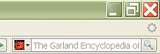

Plugins for your Search Bar
Click on the resources below to install them in your search box, located in the upper right-hand corner of your Internet Explorer or Firefox browser.

Academic Search Premier
Access World News
African American Music Resource
American Film Scripts Online
Asian American Drama
BioOne
Business Resource Center
Black Drama
Classical Scores Library
Credo Reference
Search for movies at Crossett Library
Search for CDs at Jennings Music Library
Garland Encyclopedia of World Music
Harper's
Health and Wellness resource Center
Oxford English Dictionary
Get some more
widgets